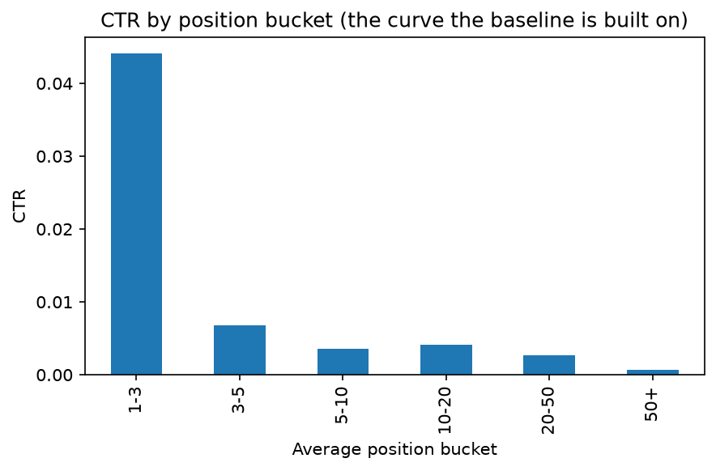

Ranking Content Pages for SEO Review Using Position-Relative Click-Through Rate
Abstract
Content teams managing thousands of pages cannot manually review all of them for search performance issues, so this project asks a focused question: can a transparent, position-relative click-through rate (CTR) signal, and a machine learning model built on top of it, reliably identify which pages are worth reviewing first? Using an anonymized warehouse of Google Search Console data, a single-signal baseline rule (CTR gap versus a page's position) was built and validated, alongside a second candidate signal (content staleness) that was tested and rejected. A gradient-boosted model was then trained on pre-decision features only and evaluated under five-fold client-grouped cross-validation against a fairness-matched version of the baseline, restricted to the 83,310 query-content pairs with genuine prior click activity so that a tie-heavy label would not distort the comparison. Across all five held-out client folds, the model's top-50 selections averaged a real, subsequently observed CTR gap of +0.0028, close to the underperformance threshold this system targets, while the baseline's top-50 selections averaged −0.0694, meaning those pages actually converted better than their position would predict once the outcome period arrived, a consistent difference of +0.0721 in the same units as the underlying business metric. This paper walks through that result along with the methodology, the leakage controls, and a couple of real evaluation mistakes that were caught and corrected along the way, in keeping with treating this as production-oriented ML work rather than a leaderboard exercise.
1. Introduction
An SEO or content team responsible for a large site, or in FlyRank's case many client sites, cannot read every page's search performance report every week. Some pages rank well in Google but earn far fewer clicks than their position would predict, and finding those pages is a natural, high-value place to focus limited review time.
This project treats that as a decision-support problem rather than an automation problem. The goal is simply to rank content pages by how much they underperform expectations, so that a human reviews the top of that list first. It deliberately steers clear of two overreaches that are easy to make with this kind of data: trying to predict Google's ranking algorithm itself, and asserting that any specific page definitely needs a content refresh. The system produces a prioritized list with a stated reason for each entry, and a person decides what, if anything, to do about each page.
2. Data
Source: the FlyRank ML Internship warehouse, an anonymized snapshot of Google Search Console performance data covering 104 clients, 519,606 distinct content items, and roughly 78.8 million daily content-performance records.
Tables used
fact_content_daily_performance— content-level daily search performance (impressions, clicks, average position), aggregated to monthly totals for this project.fact_content_query_90d— query-level performance over a fixed 90-day window (2026-04-02 to 2026-06-30, verified directly against the data rather than assumed), with two named 30-day sub-windows:prev30andlast30.dim_content— static content and SEO metadata such as word count, backlinks, search volume, competition, and content type.
Date windows: the daily-performance table covers a single calendar month
(June 2026) at content grain. The query-level table covers a fixed 90-day snapshot at
query grain, with the final 30 days (last30) held out as the outcome period
for the model's label.
What was excluded, and why
| Excluded | Reason |
|---|---|
impressions_90d, clicks_90d,
avg_position_90d, content_total_impressions_90d |
Each spans the full 90-day window, which numerically contains the
last30 outcome period, so using them as model inputs would leak
the label into the input. |
provider_used, model_used |
Internal or operational fields, not signals about page quality. |
content_updated_date, last_optimized_date |
May reflect decisions FlyRank's own system already made in response to past performance, so using them risks learning past decisions instead of new signal. |
anonymized_impressions_share |
Could distort CTR calculations from unresolvable or anonymized search volume. |
Sample size funnel
fact_content_query_90d starts at 2,414,248 rows. Restricting to rows with
genuine click activity in the outcome window (clicks_last30 > 0, explained
in Section 4.1) leaves 85,115 rows, roughly 3.5% of the original table. After joining live
content metadata and removing rows without a valid target, 83,310 rows across 41 unique
clients remain as the modeling population. That large reduction reflects the simple fact
that most individual query-content pairs receive zero clicks in any given 30-day window,
which is normal for long-tail search traffic rather than a sign of a data quality problem.
3. Methodology
3.1 Label definition
The core quantity throughout this project is the CTR gap: the difference between the CTR a page "should" get, given its average search position, and the CTR it actually gets.
ctr_gap = expected_ctr(position_bucket) - actual_ctr
expected_ctr(position_bucket) is computed empirically from the data itself,
as the observed average CTR for all pages in the same position bucket (1-3, 3-5, 5-10,
10-20, 20-50, 50+), not from an assumed industry curve. A positive ctr_gap
means a page converts worse than typical pages at its position, and that gap, weighted by
impression volume, is the project's ranking score.
3.2 Feature set and leakage boundary
The feature set is restricted to information available before the outcome period a model
would be scored against: prior-30-day (prev30) search performance, plus
static content and SEO metadata such as word count, backlinks, search volume, and
competition. Two leakage checks were applied to every candidate feature. The first is a
window-overlap check, asking whether a field numerically spans the outcome period, which
is why the _90d aggregates were excluded. The second is a product or
decision-flag check, asking whether a field reflects an action already taken because of
past performance rather than an independent signal, which is why
content_updated_date and last_optimized_date were excluded.
As a direct test of the leakage boundary, a label-period column was deliberately added back into the feature set to confirm the test harness could actually detect it. The first version of this test used a raw count field and showed no change in correlation at all. That turned out to be a flaw in the test itself, not the leakage boundary: a raw count is not linearly related to a ratio-based target, so the test needed a different column to be meaningful. It was corrected before being relied on.
3.3 Signal validation
Before building any rule, two candidate signals were tested directly against bucketed real data rather than assumed to be true.
| Signal | Hypothesis | Verdict |
|---|---|---|
| CTR vs. position | Pages ranking well but converting poorly are a real, identifiable pattern | Confirmed |
| Content staleness (days since last update) vs. performance decline | Older content declines more | Rejected |

w07_action_playbook.ipynb.
The confirmed signal, CTR versus position, is also independently supported by FlyRank's own published research (internal reference, March 2026), which reports an 88% CTR drop from top-3 to deep search positions across a much larger portfolio, essentially an external replication of the same direction found here. The rejected signal, staleness, is discussed further in Section 5, where it is contrasted with a related published finding that reached a different conclusion.
3.4 Baseline
The baseline is a single-signal, single-reason-code rule: rank content pages by
ctr_gap × impressions, so a modest gap on a high-traffic page outranks
a large gap on a negligible one, restricted to pages already ranking in the top 20 average
position with at least 50 monthly impressions. Every recommendation carries one reason
code (CTR_GAP_VS_POSITION) and one suggested action
(REWRITE_TITLE_META). It is deliberately simple and auditable, and it
functions as the floor a more complex model has to clear to be worth using.
3.5 Model and validation design
A gradient-boosted regression model (HistGradientBoostingRegressor,
random_state=42) was trained to predict ctr_gap_last30 using
only prev30 and static features, never the current outcome period's own
numbers, so that it respects the same information boundary the baseline needs to respect
for a fair comparison. Validation used GroupKFold with five folds, grouped by
client, rather than a random row-level split. A client's overall site quality is a hidden
factor shared across all of its content, so a random split would let the model partially
recognize a client it already saw in training, inflating the apparent score without
proving the model generalizes to a genuinely new client.
3.6 Tie-aware evaluation — a correction made during development
An initial evaluation pass scored every query-content pair regardless of activity level
and used Precision@50, exact top-K set overlap, as the metric. That result came back
essentially at zero for both the model and the baseline, and the cause turned out to be
the same for both: with no clicks in last30, ctr_gap_last30
collapses to a fixed constant per position bucket, and roughly a quarter of the full row
set shared the single most common value. In practice, "the true top 50" was an arbitrary
slice of a tie block containing hundreds of thousands of rows, not a meaningful ranking
target. This was diagnosed directly, by checking the fraction of rows sharing the most
common target value, rather than assumed. It was corrected two ways: first by restricting
evaluation to rows with real outcome-period click activity, and second by reporting the
mean actual outcome among each method's top-50 selections, a metric that degrades
gracefully in the presence of residual ties, as the primary result instead of exact top-K
set overlap.
4. Results
4.1 Evaluation population
As described in Section 3.6, an earlier evaluation pass across all query-content pairs
regardless of recent activity produced a degenerate result. Evaluation was corrected by
restricting to query-content pairs with genuine click activity in the outcome period. This
reduces the population from 2,414,248 raw query-content rows to 85,115 rows with real
last30 clicks, and then to 83,310 modeling rows (21 features, 41 unique
clients) after joining live content metadata and removing rows without a valid target.
This is a real, stated narrowing of scope, and Section 5 addresses what it means for the
claim below.
4.2 Validation design actually used
Five-fold GroupKFold on client_hash_id, confirming no client
appears in both train and test in any fold.
| Fold | Test rows | Test clients |
|---|---|---|
| 0 | 20,256 | 1 |
| 1 | 15,766 | 10 |
| 2 | 15,763 | 9 |
| 3 | 15,763 | 11 |
| 4 | 15,762 | 10 |
Every fold comfortably exceeds 50 rows, so a top-50 evaluation is well defined in each one.
4.3 Primary result: mean actual outcome among each method's top-50 picks
For each fold, the model (trained on prev30-and-earlier features only) and a
fairness-matched baseline (the same CTR-gap-versus-position rule, computed on
prev30 data only, so neither method sees the outcome period) each selected
their top 50 pages. Both selections were then checked against the real, subsequently
observed ctr_gap_last30:
| Fold | Model mean true CTR gap (top-50) | Baseline mean true CTR gap (top-50) |
|---|---|---|
| 0 | +0.001634 | −0.062375 |
| 1 | +0.003094 | −0.042114 |
| 2 | +0.003739 | −0.123647 |
| 3 | +0.004373 | −0.073498 |
| 4 | +0.000929 | −0.045210 |
| Mean | +0.002754 | −0.069369 |
ctr_gap_last30
among each method's top-50 selections, per fold. Values above the zero line mean the
selected pages genuinely underperformed in the outcome period (the intended target);
values below mean the selected pages actually converted better than expected. Drawn
directly from the Section 4.3 table, no interpolation or smoothing applied.
The difference is +0.072122, consistent in direction across all five folds. A positive
ctr_gap means a page converts worse than typical for its position, which is
the underperformance this system is built to surface. A negative value means the page
already converts better than typical. The model's picks land close to the actual
underperformance threshold once the outcome period arrives, while the baseline's picks
turn out, on average, to have been fine all along. A plausible explanation, consistent
with how the baseline is built, is regression to the mean: prev30_ctr_gap for
a low-traffic query can be an extreme, noisy ratio, for example one impression and zero
clicks, and rows selected for an extreme prior-period ratio are disproportionately likely
to look ordinary in the next period purely by chance. That is a known vulnerability of
ranking on a single noisy prior-period signal, and it is one the model, which combines
several pre-decision signals, is less exposed to.
4.4 A ranking-quality metric was attempted and set aside
An NDCG@50 variant was also implemented, using the fold's minimum observed value as an
additive shift to make the continuous target non-negative before applying the standard
2^relevance - 1 gain function. This produced NDCG@50 of 0.9900 for the model
versus 0.8945 for the baseline, a real, computed number, but it is not used as this
paper's primary result. The shift constant, set by rare extreme outlier rows, ends up
dominating the exponentiated gain for every row, which compresses genuinely different
selections into a narrow, uniformly high NDCG band. A reconstruction using only each
fold's own summary statistics reproduces the reported NDCG values closely, confirming that
the compression is a property of this particular construction rather than evidence that
both methods rank near perfectly. The mean-actual-CTR-gap comparison above requires no
such transform and is reported as the primary result instead.
4.5 Top-50 cutoff tie check
This is a separate concern from the population-level ties discussed in Section 5. Within each fold's own top-50 cutoff, only one row sat exactly at the boundary value in every fold (49 rows strictly above, one at the cutoff, none below among the selected 50), meaning no large tie block sits at the top of any fold's distribution. This does not contradict the population-wide tie finding in Section 5; the two describe different parts of the same distribution, since the bulk of ties sit well below the top-50 cutoff, among low or zero-activity rows already excluded by the Section 4.1 filter.
5. Limitations and Honest Framing
- This is decision support, not a determination. A high
ctr_gapscore means a page is worth a human look, not that it definitely needs a rewrite or that a rewrite will fix it. - The baseline's scoring structurally favors high-traffic content and clients. Because the score is impression-weighted, a large client's page with a modest gap can outrank a small client's page with a proportionally worse gap. That is appropriate for a "fix the biggest traffic leak first" objective, but less appropriate if the goal were fair attention across every client.
- Low CTR has causes this data cannot see. A SERP feature such as a featured snippet or a "People Also Ask" box absorbing the click, or a branded or navigational query where low CTR is normal, both look identical to genuine underperformance in this dataset. Several such cases were identified during the baseline's top-20 manual review, though they are not reproduced here as part of the public-safety pass.
- This project's own finding on content staleness disagrees with a related published FlyRank finding. The published research reports refresh timing as one of the strongest measured levers in its portfolio, while this project's own signal test, on a different data slice, found no relationship between content age and performance decline. Both are reported as they are rather than reconciled artificially. It's also worth noting that the published finding's own text says its most extreme reported ratio comes from a single data point in that bucket, which is worth weighing when comparing the two.
- The model-versus-baseline comparison is now measured, but on a narrowed
population. Restricting to
clicks_last30 > 0was necessary to get a meaningful evaluation, but it means the reported result describes performance on queries that already had some outcome-period activity, not the full long tail of query-content pairs with zero clicks in any given window. Extending the claim to that excluded majority would not be supported by this evaluation. - The dataset's target has substantial ties even after narrowing the population. Of the 83,310 modeling rows, only 10,115 unique target values exist, and 93.03% of rows fall into value groups shared with at least one other row. That's a natural consequence of CTR being a ratio of small integer counts, not a processing error. It doesn't undermine the top-50 result in Section 4, since the ties sit well below the top-50 cutoff as confirmed directly in Section 4.5, but it does mean fine-grained ranking within the bulk of the distribution isn't something this evaluation can speak to.
- An NDCG@50 variant was computed but not adopted as primary, after auditing its construction found that the additive relevance shift compresses genuine differences between methods. It's included here for transparency about what was tried, not as a second headline number.
- The result is a ranking-quality finding, not a causal or production-performance claim. It shows that the model's flagged pages were, on average, genuinely closer to the underperformance threshold once the outcome period arrived than the baseline's flagged pages. It does not show that acting on either list improves traffic, and no such test was run.
- This is a single fixed 90-day snapshot. There is no way, from this data alone, to confirm these patterns hold across seasons, industries, or a longer time horizon.
6. Ranked Recommendations (Action Playbook)
The baseline produces one recommendation type: pages ranking well but converting below the typical rate for their position are flagged for a title and meta rewrite, ranked by the traffic volume the gap represents. Before acting on any flagged page, a reviewer should check whether there's a competing SERP feature on that query right now, whether the query is branded or navigational (where low CTR is expected and normal), and whether the underlying search-volume estimate is current. Auto-publishing a rewrite without this check is explicitly out of scope; the system's role stops at producing a checked, ranked, reasoned list.
For monitoring, the position-bucket expected-CTR curve this rule is built on should be recomputed and compared month to month. A meaningful shift there signals that the benchmark itself has gone stale, independent of any single page's score.
7. Reproducibility
Repository: github.com/QaziMahadAhmad/flyrank-ml-internship-starter
Notebooks, in project order:
work/notebooks/w01_research_question.ipynb— lane and questionw02_ml_task_framing.ipynb— ML task framingw03_data_contract.ipynb— data contractw03_feature_leakage_check.ipynb— feature build and leakage testsw04_signal_audit.ipynb— signal validationw04_baseline_score.ipynb— baseline rule and real outputw05_model.ipynb— model training and evaluationw06_validation_audit.ipynb— validation and research-claim auditw07_action_playbook.ipynb— recommendation packaging
Seeds: random_state=42 is used throughout for the model and
the cross-validation folds.
How the final evaluation was produced: fact_content_query_90d
was filtered to clicks_last30 > 0 immediately after loading (85,115 rows),
joined to live dim_content and filtered to a valid target (83,310 modeling
rows), then split with GroupKFold(n_splits=5) on client_hash_id.
For each fold, HistGradientBoostingRegressor(random_state=42) was trained on
the train-fold rows and used to select that fold's top-50 test rows by predicted
ctr_gap_last30. The fairness-matched baseline selected its own top-50 by
prev30_ctr_gap over the same test rows, and both selections were checked
against the real, held-out ctr_gap_last30 for those rows.
Acknowledgments and Data Credit
Built on the FlyRank ML Internship dataset, provided by FlyRank for internship training and portfolio development. All data used is anonymized, and no client-identifying information appears in this paper or its underlying analysis.